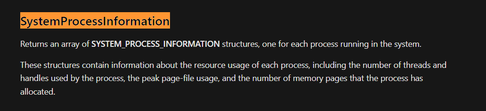
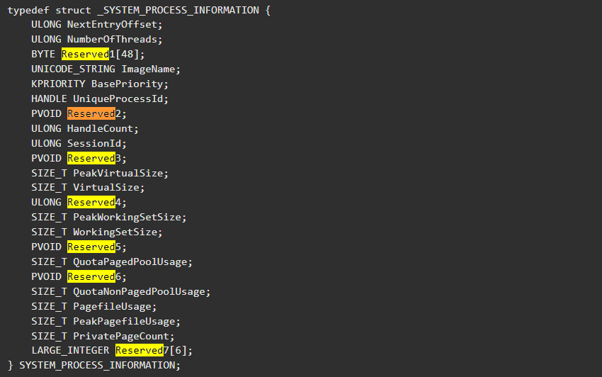
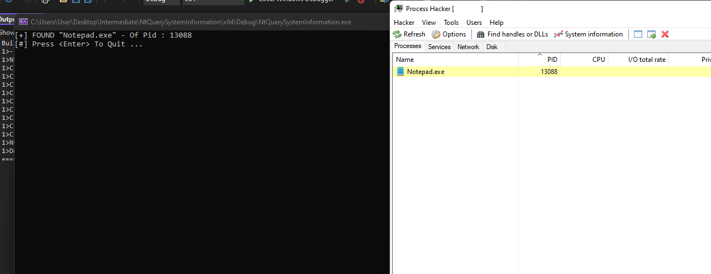

Introduction
This module discusses a more unique way of performing process enumeration using NtQuerySystemInformation, which is a syscall (more on syscalls later). NtQuerySystemInformation is exported from the ntdll.dll module and therefore it will require the use of GetModuleHandle and GetProcAddress.
Microsoft's documentation on NtQuerySystemInformation shows that it is capable of returning a lot of information about the system. The focus of this module will be on using it to perform process enumeration.
Retrieve NtQuerySystemInformation's Address
As previously mentioned, GetProcAddress and GetModuleHandle are needed to retrieve NtQuerySystemInformation's address from ntdll.dll.
// Function pointer
typedef NTSTATUS (NTAPI* fnNtQuerySystemInformation)(
SYSTEM_INFORMATION_CLASS SystemInformationClass,
PVOID SystemInformation,
ULONG SystemInformationLength,
PULONG ReturnLength
);
fnNtQuerySystemInformation pNtQuerySystemInformation = NULL;
// Getting NtQuerySystemInformation's address
pNtQuerySystemInformation = (fnNtQuerySystemInformation)GetProcAddress(GetModuleHandle(L"NTDLL.DLL"), "NtQuerySystemInformation");
if (pNtQuerySystemInformation == NULL) {
printf("[!] GetProcAddress Failed With Error : %d\n", GetLastError());
return FALSE;
}NtQuerySystemInformation Parameters
NtQuerySystemInformation's parameters are shown below.
__kernel_entry NTSTATUS NtQuerySystemInformation(
[in] SYSTEM_INFORMATION_CLASS SystemInformationClass,
[in, out] PVOID SystemInformation,
[in] ULONG SystemInformationLength,
[out, optional] PULONG ReturnLength
);SystemInformationClass - Decides what type of system information the function returns.SystemInformation - A pointer to a buffer that will receive the requested information. The returned information will be in a form of a structure of type specified according to the SystemInformationClass parameter.SystemInformationLength - The size of the buffer pointed to by the SystemInformation parameter, in bytes.ReturnLength - A pointer to a ULONG variable that will receive the actual size of the information written to SystemInformation.Since the objective is process enumeration, the SystemProcessInformation flag will be used. Using this flag will make the function return an array of SYSTEM_PROCESS_INFORMATION structures (via the SystemInformation parameter), one for each process running in the system.

SYSTEM_PROCESS_INFORMATION Structure
The next step is to review Microsoft's documentation to understand what the SYSTEM_PROCESS_INFORMATION structure looks like.
typedef struct _SYSTEM_PROCESS_INFORMATION {
ULONG NextEntryOffset;
ULONG NumberOfThreads;
BYTE Reserved1[48];
UNICODE_STRING ImageName;
KPRIORITY BasePriority;
HANDLE UniqueProcessId;
PVOID Reserved2;
ULONG HandleCount;
ULONG SessionId;
PVOID Reserved3;
SIZE_T PeakVirtualSize;
SIZE_T VirtualSize;
ULONG Reserved4;
SIZE_T PeakWorkingSetSize;
SIZE_T WorkingSetSize;
PVOID Reserved5;
SIZE_T QuotaPagedPoolUsage;
PVOID Reserved6;
SIZE_T QuotaNonPagedPoolUsage;
SIZE_T PagefileUsage;
SIZE_T PeakPagefileUsage;
SIZE_T PrivatePageCount;
LARGE_INTEGER Reserved7[6];
} SYSTEM_PROCESS_INFORMATION;The focus will be on UNICODE_STRING ImageName which contains the process name and UniqueProcessId which is the process ID. Additionally, NextEntryOffset will be used to move into the next element in the returned array.
Since calling NtQuerySystemInformation with the SystemProcessInformation flag will return an array of SYSTEM_PROCESS_INFORMATION of unknown size, NtQuerySystemInformation will need to be called twice. The first call will retrieve the array size, which is used to allocate a buffer, and then the second call will use the allocated buffer.
It's expected that the first NtQuerySystemInformation call will fail with a STATUS_INFO_LENGTH_MISMATCH (0xC0000004) error since invalid parameters are being passed simply to retrieve the array size.
ULONG uReturnLen1 = NULL,
uReturnLen2 = NULL;
PSYSTEM_PROCESS_INFORMATION SystemProcInfo = NULL;
NTSTATUS STATUS = NULL;
// First NtQuerySystemInformation call
// This will fail with STATUS_INFO_LENGTH_MISMATCH
// But it will provide information about how much memory to allocate (uReturnLen1)
pNtQuerySystemInformation(SystemProcessInformation, NULL, NULL, &uReturnLen1);
// Allocating enough buffer for the returned array of `SYSTEM_PROCESS_INFORMATION` struct
SystemProcInfo = (PSYSTEM_PROCESS_INFORMATION) HeapAlloc(GetProcessHeap(), HEAP_ZERO_MEMORY, (SIZE_T)uReturnLen1);
if (SystemProcInfo == NULL) {
printf("[!] HeapAlloc Failed With Error : %d\n", GetLastError());
return FALSE;
}
// Second NtQuerySystemInformation call
// Calling NtQuerySystemInformation with the correct arguments, the output will be saved to 'SystemProcInfo'
STATUS = pNtQuerySystemInformation(SystemProcessInformation, SystemProcInfo, uReturnLen1, &uReturnLen2);
if (STATUS != 0x0) {
printf("[!] NtQuerySystemInformation Failed With Error : 0x%0.8X \n", STATUS);
return FALSE;
}Iterating Through Processes
Now that the array has been successfully retrieved, the next step is to loop through it and access ImageName.Buffer, which holds the process name. Every iteration will compare the process name to the target process name.
To access each element of type SYSTEM_PROCESS_INFORMATION in the array, the NextEntryOffset member must be used. To find the address of the next element, add the address of the previous element to NextEntryOffset. This is demonstrated in the snippet below.
// 'SystemProcInfo' will now represent a new element in the array
SystemProcInfo = (PSYSTEM_PROCESS_INFORMATION)((ULONG_PTR)SystemProcInfo + SystemProcInfo->NextEntryOffset);Freeing allocated Memory
Before moving SystemProcInfo to the new element in the array, the initial address of the allocated memory needs to be saved in order to be freed later. Therefore, right before the loop begins, the address needs to be saved to a temporary variable.
// Since we will modify 'SystemProcInfo', we will save its initial value before the while loop to free it later
pValueToFree = SystemProcInfo;NtQuerySystemInformation Process Enumeration
The complete code to perform process enumeration using NtQuerySystemInformation is shown below.
BOOL GetRemoteProcessHandle(LPCWSTR szProcName, DWORD* pdwPid, HANDLE* phProcess) {
fnNtQuerySystemInformation pNtQuerySystemInformation = NULL;
ULONG uReturnLen1 = NULL,
uReturnLen2 = NULL;
PSYSTEM_PROCESS_INFORMATION SystemProcInfo = NULL;
NTSTATUS STATUS = NULL;
PVOID pValueToFree = NULL;
pNtQuerySystemInformation = (fnNtQuerySystemInformation)GetProcAddress(GetModuleHandle(L"NTDLL.DLL"), "NtQuerySystemInformation");
if (pNtQuerySystemInformation == NULL) {
printf("[!] GetProcAddress Failed With Error : %d\n", GetLastError());
return FALSE;
}
pNtQuerySystemInformation(SystemProcessInformation, NULL, NULL, &uReturnLen1);
SystemProcInfo = (PSYSTEM_PROCESS_INFORMATION)HeapAlloc(GetProcessHeap(), HEAP_ZERO_MEMORY, (SIZE_T)uReturnLen1);
if (SystemProcInfo == NULL) {
printf("[!] HeapAlloc Failed With Error : %d\n", GetLastError());
return FALSE;
}
// Since we will modify 'SystemProcInfo', we will save its initial value before the while loop to free it later
pValueToFree = SystemProcInfo;
STATUS = pNtQuerySystemInformation(SystemProcessInformation, SystemProcInfo, uReturnLen1, &uReturnLen2);
if (STATUS != 0x0) {
printf("[!] NtQuerySystemInformation Failed With Error : 0x%0.8X \n", STATUS);
return FALSE;
}
while (TRUE) {
// Check the process's name size
// Comparing the enumerated process name to the intended target process
if (SystemProcInfo->ImageName.Length && wcscmp(SystemProcInfo->ImageName.Buffer, szProcName) == 0) {
// Opening a handle to the target process, saving it, and then breaking
*pdwPid = (DWORD)SystemProcInfo->UniqueProcessId;
*phProcess = OpenProcess(PROCESS_ALL_ACCESS, FALSE, (DWORD)SystemProcInfo->UniqueProcessId);
break;
}
// If NextEntryOffset is 0, we reached the end of the array
if (!SystemProcInfo->NextEntryOffset)
break;
// Move to the next element in the array
SystemProcInfo = (PSYSTEM_PROCESS_INFORMATION)((ULONG_PTR)SystemProcInfo + SystemProcInfo->NextEntryOffset);
}
// Free using the initial address
HeapFree(GetProcessHeap(), 0, pValueToFree);
// Check if we successfully got the target process handle
if (*pdwPid == NULL || *phProcess == NULL)
return FALSE;
else
return TRUE;
}Undocumented Part of NtQuerySystemInformation
NtQuerySystemInformation remains largely undocumented and a large portion of it is still unknown. For example, notice the Reserved members in SYSTEM_PROCESS_INFORMATION.

The code provided in this module uses a different version of the SYSTEM_PROCESS_INFORMATION structure. Regardless, both Microsoft's version and the version used in the module's code lead to the same output. The main difference is the structure that's used in this module contains more information rather than Microsoft's limited version which contains several Reserved members. Furthermore, another version of the SYSTEM_INFORMATION_CLASS structure was used which is also more documented than Microsoft's version. Both structures can be viewed via the links below.
SYSTEM_PROCESS_INFORMATION from ReactOS DocumentationSYSTEM_INFORMATION_CLASS from System Informer DocumentationDemo
The image below shows the output after compiling and running the code presented in this module. The target process is Notepad.exe.
